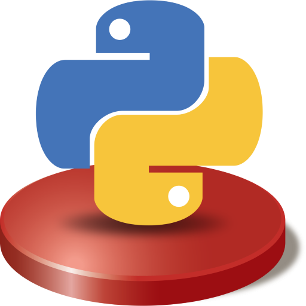
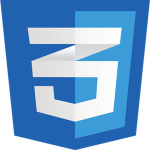

About me
Welcome to My Personal Website!!
I am a self-driven, quick starter, and passionate researcher with a curious mind,
thriving on solving complex and challenging real-world problems. My professional journey revolves around the fascinating
realms of nanotechnology, pharmaceutical science, chemical engineering, analytical chemistry, organic chemistry, and biotechnology.
Scientific Expertise


Managerial & Soft skills
-
Leadership
Worked as team lead in various events.
-

Time Management
Knowledge and experience in project & event management responsibilities.
-

Communication
Working experience with international & national teams and collaborators.
-

Willingness to Learn
I'm always eager to learn new things and skills to improve my overall performance.
Tech Expertise
-
 C++
C++ -

Python
-
 HTML
HTML -
 JavaScript
JavaScript -

CSS